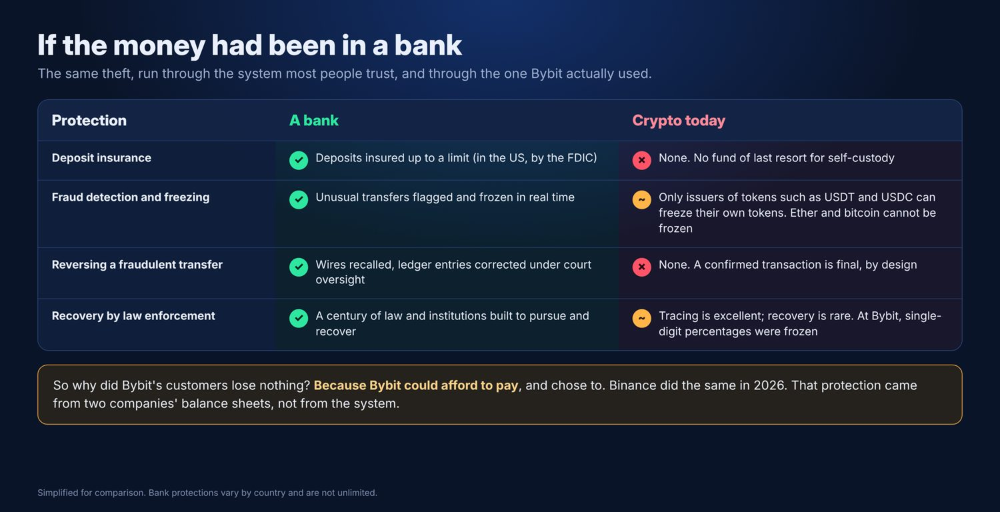

- Bybit’s customers lost nothing only because Bybit could afford to pay.
- Crypto has no deposit insurance, no reversal and little recovery. Its only two remedies have been a rich backer or a change to the chain’s rules.
- Holding your own keys protects the key, not the decision to sign.
The happy ending that shouldn’t reassure you
Bybit’s story has, improbably, a happy ending. Within about seventy-two hours the exchange had replaced essentially all of the stolen Ethereum and restored full backing of customer balances — not through insurance, but by borrowing and buying at speed: a bridge loan against its own treasury, large deposits, market purchases, and emergency loans from competitors, one of which, Bitget, lent 40,000 ETH from its own reserves with no interest and no collateral and was repaid within three days. (Nineteen months later Bitget was robbed itself; Part 4 returns to it.) Customers lost nothing. The exchange absorbed a billion-and-a-half-dollar loss onto its own balance sheet and stayed on its feet.
It is worth admiring, and it is worth seeing clearly, because the happy ending is the most misleading part of the whole affair. Customers were made whole for one reason and one reason only: a solvent company chose to absorb the loss, and could. The customers held a claim against Bybit, not against the wallet, and Bybit honored it. Strip that single fact away — imagine the same theft from an entity without a billion-dollar balance sheet and the credit to borrow more — and there is no recovery, no restoration, no happy ending. There is just the loss, permanent, the moment the signature cleared.
That is the thread from Parts 1 and 2, finally pulled tight. The heist was survivable not because the system caught it, reversed it, or insured it. The system did none of those things. It was survivable because, this once, someone rich stood behind the wallet. The interesting and frightening question is what happens — what already happens, constantly, to people you don’t read about — when no one does.
What a bank would have done
To feel the gap, run the same crime through the financial system most of the world actually trusts.
Suppose North Korean operatives had wired roughly a billion and a half dollars out of an ordinary bank. Almost every layer of that system is built, specifically, to make the victim whole and the theft reversible. There is deposit insurance — in the United States, the FDIC; analogues across the world — that backstops ordinary depositors up to a limit, funded precisely so that one institution’s catastrophe is not one family’s ruin. There is a fraud-detection apparatus that flags and freezes anomalous transfers in real time. There is the ability to reverse a fraudulent transaction — clawbacks, chargebacks, the simple fact that a wire can be recalled and a ledger entry corrected, because the ledger is maintained by institutions that answer to courts. There is a body of law, a regulator, and a law-enforcement infrastructure built over a century specifically to pursue financial crime and, often enough, to recover. None of it is perfect. All of it exists.
The comparison does not have to be imagined. In February 2016, hackers whom United States prosecutors later charged as working for the North Korean government sent 35 forged payment instructions over the SWIFT interbank network, ordering $951 million out of the account that Bangladesh’s central bank keeps at the Federal Reserve Bank of New York. Thirty of the instructions, about $850 million, were stopped before they were paid. Of the five that went through, $20 million bound for Sri Lanka was queried by a bank on the route and returned. The remaining $81 million reached accounts in Manila and was passed through casinos; about $15 million of it came back, and Bangladesh was still pursuing the rest in court more than nine years later. So the conventional system is no guarantee either. But set the two results side by side. Against a bank, the attackers got away with less than a tenth of what they reached for. Against Bybit, they kept well over nine-tenths.
The expectation that someone, somewhere, will catch the fraud and undo it is so deeply baked into how ordinary people relate to money that they do not even experience it as a feature. It is simply what money is: the bank will sort it out. Most people have never once had to ask what stands behind that assumption, because in the world they grew up in, something always did.

What crypto actually has
Now run the Bybit numbers against that apparatus, item by item, and watch each line come up empty.
Deposit insurance: none. There is no FDIC for self-custodied crypto, no fund of last resort, no statutory backstop that makes a victim whole when the keys are gone. Fraud reversal: none — and not by accident but by design. The entire value proposition of a blockchain is that entries are final and cannot be quietly rewritten by an institution; immutability is the point. The property that makes the ledger trustworthy is the same property that makes a theft permanent. There is no chargeback on a confirmed transaction, no recall, no undo. Recovery by law enforcement: vanishingly rare at this scale. Attribution, to crypto’s credit, is often excellent — the FBI named North Korea within days, and on-chain analysts traced the flows in real time — but tracing is not recovering. In Bybit’s case, despite a fast, well-publicized, bounty-funded effort, only single-digit percentages of the stolen funds were ever frozen; the bulk was converted to Bitcoin and scattered across thousands of wallets within days, beyond any practical reach. The trail was visible. The money was gone.
So the honest ledger reads: no insurer, no fraud desk, no undo button, no realistic recovery. Strip away the one company that happened to be able to write the check, and crypto’s answer to a billion-dollar theft is a shrug and a block explorer showing you, in perfect detail, exactly where your money went and confirming you will never get it back.
The only two remedies it has ever had
This is not pessimism; it is the historical record. In its entire history, when catastrophe has struck on-chain, the ecosystem has had exactly two remedies — and neither is available to an ordinary holder.
The first is the one we just watched: someone rich absorbs it. An exchange, a foundation, a project treasury with enough capital and enough reputational incentive eats the loss and makes users whole. Bybit, February 2025. It works, when it is available. It is available almost never.
The second is more drastic and more revealing: the community overrides the ledger by force. In 2016, an attacker drained roughly a third of all the ether then committed to a project called The DAO. The loss was existential, and the Ethereum community did something extraordinary to reverse it — it executed a hard fork: a one-time change to the network’s own rules which, from a set block onward, moved the drained ether into a contract from which the original investors could withdraw it. No earlier block was erased and no transaction was undone; the contents of the ledger were changed by collective decision. It worked, but it tore the community in half: a faction that believed the ledger must be immutable no matter what refused to follow, and kept running the chain without the change. That chain still exists today as Ethereum Classic. The lesson everyone drew from it was not “forking is a good safety net.” It was the opposite: overriding the ledger is so violent to the one promise a blockchain makes — that what is recorded stays as recorded — that it can be done, if ever, only once, for a threat to the whole network, at the cost of fracturing it.
And we know it became unavailable, because the very next time a catastrophe of comparable scale struck, the community declined to use it. In 2017, a bug froze a fortune in ether in the Parity multisig wallet — hundreds of millions of dollars, locked forever, belonging to ordinary users who had done nothing wrong. Proposals to recover it by fork were raised, debated, and rejected. The money is still frozen, almost a decade later. The precedent is stark: the fork remedy is reserved for threats to Ethereum itself, not for the losses of the people who use it. If your funds are stolen or locked, you will not be forked back to wholeness. The DAO was the exception that proved there is no rule.
So the two remedies, side by side: be backstopped by a wealthy entity that chooses to absorb your loss, or be important enough to the entire network that it will fracture itself to save you. An individual holding their own savings, a foundation, a DAO treasury, a small company — has access to neither. For them, as for Bybit-minus-its-balance-sheet, the loss is simply the loss.
The deeper pattern: the part that was never trustless
It would be easy to read all this as “crypto is dangerous” and stop. The more useful reading is more specific, and it goes back to a critique the cryptographer Moxie Marlinspike — the creator of Signal — made of Web3 years before Bybit.
Marlinspike’s observation was that the things people actually use to interact with blockchains are not themselves decentralized. Most applications do not run against their own view of the chain; they lean on a handful of centralized providers to read it for them, and on web interfaces served from ordinary corporate infrastructure. A technology sold as trustless quietly reintroduces exactly the centralized chokepoints it was meant to abolish — points where what you see is mediated by a company that could, in principle, shape or withhold it. He was describing the surface that shows you your assets. Bybit is the same disease one layer over: the surface that shows you what you are about to sign.
This is the structural heart of the matter, and it reframes the whole heist. The blockchain underneath — the part everyone argues about, the consensus, the cryptography, the immutable ledger — that part largely worked. It is trust-minimized and it improves, because, as Part 2 noted, it cannot hide its mistakes. What failed at Bybit, and what fails in incident after incident, is the soft layer bolted on top: the host-served web app, the centralized read-providers, the off-chain coordination services — the conventional, corporate, opaque infrastructure that humans actually touch. And the industry’s instinct has been to grow that layer, not shrink it: more services, more convenience, more surface, all of it sitting in exactly the trust setting that has now demonstrated, at a scale no bank robbery has ever reached, that it cannot be trusted.
The asymmetry this produces is the quiet scandal. When you operate through that layer, you extend it complete trust, and your exposure is total: if it fails, you bear the entire loss, and the surface that failed bears none of it. You are asked to trust, completely, the one part of the system that was never built to earn trust the way the chain beneath it was.
Why this is suddenly everyone’s problem
For a decade this was a connoisseur’s concern — the worry of people who already knew what a seed phrase was. That is ending, fast, and the reason is stablecoins.
Stablecoins are pulling the general public and the traditional financial system onto these rails at a scale that dwarfs anything crypto has seen. Banks, payment companies, and ordinary users are arriving — not crypto-natives who have absorbed a decade of hard lessons, but people whose entire intuition about money was formed inside the banking system described above. They arrive carrying banking expectations: that fraud will be caught, that a wrong transaction can be reversed, that someone insures the deposit, that if the worst happens there is a number to call and a body that will, eventually, make it right.
Every one of those expectations is false here. And the gap between what these newcomers expect and what the system actually provides is not a minor onboarding wrinkle — it is, itself, systemic risk. We are about to connect a system with no FDIC, no fraud desk, and no undo button to millions of people who have never once had to live without them, at the exact moment the sums involved are becoming large enough to matter to the broader economy. The Bybit heist is not a curiosity from crypto’s rowdy adolescence. It is a preview, run at full scale, of a failure mode an enormous number of people are about to be exposed to without knowing it.
Self-custody is not self-defense
There is a reflexive answer to all of this inside crypto, and it is half right. The answer is: don’t trust an exchange — hold your own keys. Self-custody. Be your own bank. It is half right because the alternative — handing your assets to a custodian — concentrates exactly the kind of honeypot that gets drained, and removes the one genuine virtue of the technology, which is that you need not ask anyone’s permission to hold your own money.
But “be your own bank” quietly smuggles in a promise it does not keep. Being your own bank means being your own fraud department, your own security team, your own insurer, your own court of appeal — and the tools handed to ordinary people to do all that are laughably unequal to it. The state of the art for an individual is a hardware wallet in a drawer and a seed phrase written on a piece of paper, hidden somewhere in the house. That setup protects the key. It does nothing to protect the decision.
And the decision is where the money is lost. Bybit proves it at the highest possible level: those signers had institutional-grade hardware wallets, the best the market offers, in disciplined professional hands — and they still authorized the theft, because the thing that was attacked was not their keys but their understanding of what they were signing. If the best-equipped signers in the world can be made to approve their own ruin while holding their hardware wallets, the lone individual with a Ledger (the hardware-wallet maker) device and a paper seed phrase is not meaningfully defended. Self-custody, as it exists today, is custody without protection. It secures the key to the vault and leaves the person standing at the door with no way to tell whether the thing they are about to sign will open it for them or for someone else.
In 2026 even the first half of that sentence, that the setup at least secures the key, stopped being safe to assume. From the end of July, bitcoin worth more than $100 million was taken from thousands of addresses whose recovery phrases had been generated on some models of the Coldcard hardware wallet. A software error introduced in March 2021 had made those devices bypass their hardware source of randomness when creating a phrase, so the phrases could be worked out by someone who never touched the device. Updating the device afterward did not help, because the weakness was in the phrase already created. In October, Ledger confirmed that devices sold through a reseller in Southeast Asia had been fitted before sale with a hidden component that read the recovery phrase from the device’s own screen during setup and sent it out over the mobile phone network; the tampered devices could still pass Ledger’s check that a device is genuine. The owners in both cases did nothing wrong. And the weak point in both was the same object: the recovery phrase, a complete copy of the spending authority that the device must create once and show once.
Holding your own keys is necessary. It is nowhere near sufficient. Self-custody is not self-defense.
The reinforced safe
So where does that leave an honest person who does not want to hand their money to a custodian and does not want to keep it, in effect, under the mattress?
It leaves them needing the thing the physical world figured out a long time ago. When people keep valuables at home rather than at a bank, they do not make it safe by trusting a flimsy lockbox and resolving to be careful. They buy a real safe — something engineered so that being careful is not the last line of defense, so that the protection is structural and does not depend on the owner being vigilant at the worst possible moment. The crypto equivalent does not really exist yet at consumer scale, and that absence — not the absence of another exchange, another app, another convenience layer — is the actual gap.
What would such a thing require? The two disciplines Part 2 ended on, made real: a display that is both readable and trustworthy, so what you confirm is derived from the actual bytes you are signing and cannot be repainted by a compromised host; and a structural separation of catastrophic operations from routine ones, so that “this changes what your wallet obeys” is something the system can refuse, not something a tired human is expected to notice.
And one change of arrangement that holds both together. The host — the phone, the laptop, the web page — is reduced to proposing transactions and nothing more. It no longer describes them to the person approving, and it never handles a signature. Describing and signing move to an independent verifier: a service that works out what each proposed transaction actually does from its bytes, applies the owner’s rules, and is the only party able to have it signed. A small dedicated device in the owner’s hand shows the verifier’s description in plain language and carries the owner’s confirmation back to it. In effect the hardware wallet is extended: confirmation stays in the owner’s hand, and signing moves to the verifier.
That is where the platform matters, because a verifier that holds signing authority must not itself become the next thing one stolen credential can rewrite. Every ordinary web server — the kind that delivered the poisoned page — has one defining property: a single writer can change what it serves, silently, and everyone downstream receives the change. A verifier run under consensus does not have that property. There is no single party who can rewrite it alone; a change requires agreement and leaves a record. Consensus on its own would not have saved Bybit if the host had still been the one describing the transaction. The arrangement of roles is what removes the attack; consensus is what keeps the verifier from becoming a new single point of compromise. Together they turn the Bybit attack from “one developer’s machine away” into “not reachable by compromising any one party at all.”
Here is the one genuinely hopeful thing in this entire story: none of that is hypothetical. Services of this kind can run on a consensus platform rather than on a single company’s infrastructure, and they are being built today. (In the interest of disclosure: the team behind this series is building a wallet architecture of the kind just described, which Part 4 sets out, and already runs a trust-minimized coordinator on the Internet Computer, as a limited prototype, for an encrypted-messaging product. It is early and it is small. We mention it not as a product pitch but as evidence that the platform it depends on exists.) That is the only claim that matters at the end of all this: the soft, centralized, forgeable surface that failed at Bybit — and that fails, quietly and without a backstop, for people you never read about — is a choice. It is not a law of nature. The reinforced safe is buildable. The reason to insist on it is everything in the two parts that came before, and everything the stablecoin era is about to put at stake.
We have a billion-and-a-half-dollar proof that the current architecture fails. We have a century of banking to show what a real safety net looks like, and a decade of crypto history to show that this system has nothing like it. And we are, right now, on the eve of inviting everyone in. The question is no longer whether the Bybit class of failure is possible. It is whether we build the safe before, or after, the next wave of people we have invited learns the hard way that no one is coming to make them whole.
This is Part 3 of a four-part reconstruction. Part 1, “The Locked Room,” reconstructed the heist; Part 2, “The Trail Out the Door,” followed it to the mechanism. Part 4, “Fifty Signatures,” follows the same attacker to the October 2026 Binance theft, four times larger, and describes the signing architecture referred to above. This series is published by a team building signing and coordination architecture of the kind discussed above, and the disclosure in the final section is offered in that spirit. The reconstruction and the historical record stand on public sources — forensic reports on the Bybit incident, public accounts of The DAO fork, the Parity freeze, the 2016 Bangladesh Bank theft and the 2026 Coldcard and Ledger-reseller incidents, and published analyses of stablecoin adoption — and specific figures should be re-verified against primary sources before publication. Nothing here is legal or financial advice.